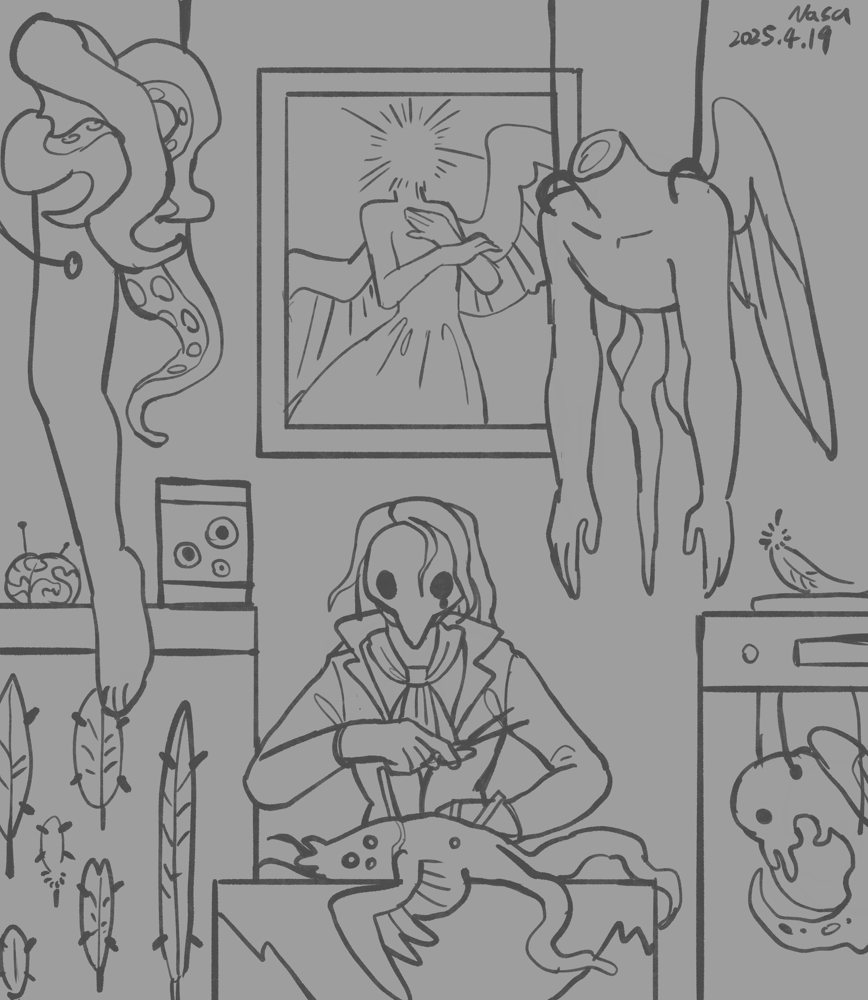
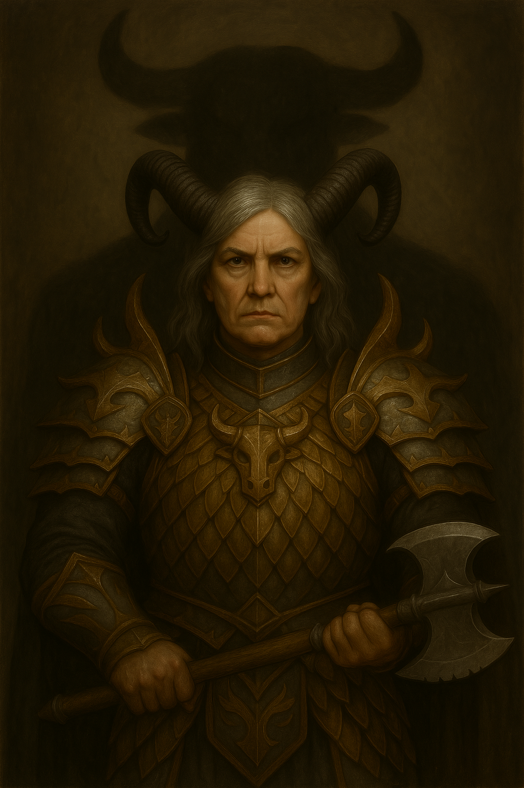
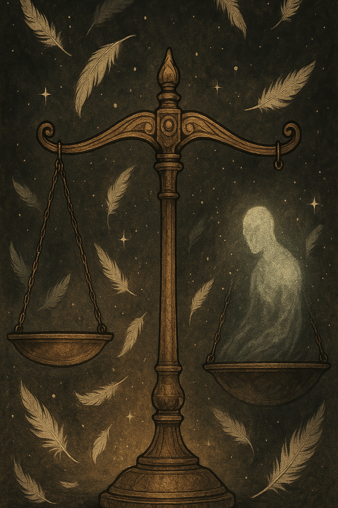
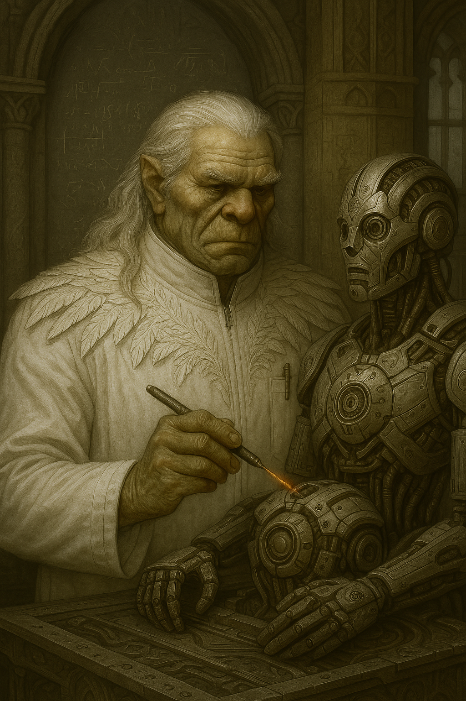

Chapter 3: Broken Angels
Requiem of the Feathered Estate

Requiem of the Feathered Estate
15051.09.14
離開餐廳後，GoR 走在最後。當他踏入長廊時，已不見夥伴們的身影，隻身一人穿梭在滿滿賓客與羽僕的空間。
GoR 在長廊上看見一幅疑似 Kudan 的畫像，不過比起他所熟悉的樣子，更加蒼老，且身上穿的不是長袍，而是像戰士穿著的盔甲，手上甚至持著一把武器。甚至，有個高大的牛頭身影籠罩在 Kudan 的背後。GoR 感到困惑，但也無法得到更多資訊，因此他決定和身邊的賓客攀談。

賓客們說著這畫像的主人已經來到莊園很久，好幾年的時間了。不過不同賓客間的話語，似乎也有些出入。但他們都有提到一些看起來格格不入的人，似乎在宴會中不怎麼放鬆，種種描述，讓 GoR 猜測這些人便是他的冒險夥伴。
GoR 打開了一扇門，發現是通往地下的樓梯。他不太確定走下去是否是好的選擇，因此他也將視線所及能看到的門通通都打開，卻發現都是通往同一座樓梯。在嘗試與羽僕詢問後，他決定還是走下樓梯去，而那名羽僕也跟隨其後。
地下室是一間小型的牢房，牢房深處有個窩在角落的身影，讓 GoR 感到些許熟悉。在羽僕火把的照射下，GoR 看得更清楚了。雖然他沒有見過 Guns，但他從攀附在他身上的孽物 Rose 說的話，對 Guns 已經非常熟悉了。那隻蜷縮在角落的孽物，就是 Guns。GoR 再更仔細看，發現 Guns 不僅被銬住，背後還被生硬的插上了金屬製的「翅膀」，看起來悲慘又痛苦。
「那是 Lysien 大人失敗的實驗品。」羽僕不帶情緒的說道。GoR 詢問，既然是失敗品，那是否能讓他帶走？但羽僕只回應，這不是他能決定的。GoR 將身上的三隻孽物從牢房的柵欄送了進去，請他們把 Guns 搬出來。Rose 在 Guns 身邊逡巡，表露出類似關懷、愛護的神情，但另外兩隻孽物，則似乎沒有特別的表現。也因為 Guns 的身體被固定住，孽物們沒有辦法把他搬走。GoR 決定將孽物們召回，上來去尋找 Lysien 或是其他可能的幫忙。Rose 對於離開 Guns 感到依依不捨，但也還是聽了 GoR 的話，乖乖回到他身上了。
走上樓，GoR 走入了餐廳。他看見餐廳與他離開前的擺設有所不同，是類似自助餐的形式。他在餐廳找了幾名賓客詢問，詢問關於他的夥伴們的消息，然而賓客們的答案有所出入，GoR 也利用這樣的機會，想製造個小衝突。在衝突擴大錢，Lysien 從角落緩緩走出，拍拍兩名賓客的肩膀，衝突瞬間消失，人群也一哄而散。GoR 試圖和 Lysien 搭話，但得到的都是不怎麼有用的資訊。
離開餐廳，GoR 回到長廊，想回到地下室去，因此開了剛剛的那扇門，但此時門通往的方向不是剛才的樓梯，而是一座漆黑的房間，裡頭有一支點亮的蠟燭。門關上，GoR 向前走，看見一名穿著斗篷的人，示意著他坐下。從那人的皮膚，GoR 感受到一股莫名的熟悉。很快地，他便發現那是 Rose—不過是「人形化」的 Rose。這時，他才發現 Rose 已經在他肩膀上消失了。
「Rose」拿出一疊卡牌，要 GoR 抽一張牌。GoR 抽了五張，翻開後卻發現裡面只有一張有圖樣。

「GoR，這是你的牌。天秤的一端，有一個靈魂，另一端是空的。你要如何將天秤平衡呢？是放上另一個靈魂嗎？如果是你的靈魂，你願意線上嗎？他夠重嗎？」Rose 無情地說著。「你不需要馬上做出決定，等儀式時，回答 Lysien 就好。」
GoR 看著 Rose 把其他的牌收起，他也站了起來，對房間做了簡單的探索。他發現房間的陰暗角落，躲藏了不少小型的孽物，但只要他一接近，孽物就試著逃離他，屢試不爽。最終 GoR 發現也沒有辦法做其他事，便離開了房間。
一推開門，GoR 便看見了他的冒險夥伴們從隔壁的門口走出。其他冒險者們見到 GoR，他們消失了好久的夥伴，便聚集在一起，同步了一下資訊。GoR 引導他們看向 Kudan 異樣的肖像畫，Kudan 對此似乎不是太喜歡。Ubbo 將畫取下後，掛在 Kudan 的角上，喊著「Kudan 從畫裡出來了，和 GoR 一樣！」。
接著冒險者們又走進了一扇門，門後是 Lott 曾去過的那間酒館。大家找了座位坐下來。Ubbo 和 Kudan 看見 Lysien 站在酒館後方的角落，手上拿著一本和平常不太一樣的書，但一樣在抄寫。他們向 Lysien 走去，而 Lysien 也大方地將書遞給他們，便走了。書的封面寫著「Amoret」，那是 Lysien 的姓氏。不過內容是由月神語和通用語交錯寫著的，冒險者們只能看懂如「天使」、「翅膀」「芬尼爾」等關鍵字，其他都看不懂。
大家感到疲倦，在酒館找了地方簡單休息。除了 GoR 外，每個人都睡著了，但不久後大家都清醒了，活力滿滿。不過，Ubbo 和 Kudan 眼中看見的其他夥伴，都是如在宅邸中看見的版本，而非年輕的模樣。Psyber 提議應該要去找到 Lysien，把他殺了，才有辦法離開這座宅邸，GoR 也同意這個做法。然而，Lott 對於 Lysien 沒有那麼強的殺機，但也同意必須要找到他。
大家走回長廊上，也看見了最後一名夥伴的肖像。那是 Psyber，身著如實驗用的服飾，正為機器人加工著，很明顯的，他的肖像中完全沒有任何與自然或植物相關的內容。

大家再次選了個房間走入，這回，是 Ubbo 和 Kudan 進去過的劇場，不過劇場內一個人也沒有，只有舞台是亮的。Lott 和 Ubbo 踏上舞台，做了探索。Ubbo 才剛確認完沒有看見小丑，轉頭就看見小丑的臉貼在他眼前，嚇得他趕緊揮了一拳。
小丑大喊最後一齣戲就要上演了，Ubbo 也就乖乖回到座椅上了。
布幕拉開，一名裝扮成 Lysien 的羽僕正跪拜著，他身邊的多名女子在怎麼追求他，他也無動於衷，直到他的眼前出現一道白光，一名由羽僕扮演，像是天使般的角色，從天而降，他便站起身，與天使互相抓緊對方的雙手，望向對方的眼底。
布幕再次拉開時，一座桌子前，Lysien 和天使並肩坐著，Lysien 寫著字，不時拿起紙，向著天使念起他寫的詩句，內容像是「若你愛得夠深，世界會為你改寫名字」等。但一段時間後，天使卻突然僵直，在 Lysien 觸碰、擁抱後，卻化為粉碎，只留下 Lysien 仰天長嘯。
布幕最後一次拉開，Lysien 的身邊是各種不同生物不完整的遺體。他專注到像是瘋狂似的將金屬插在這些身體上，製造出像是天使，但又駭人的東西。他始終沒有得到滿意的答案，只能抱頭痛哭。
布幕放下，燈光暗下，冒險者們聽見背後傳來拍手聲。他們轉頭一看，Lysien 坐在離出口最近的角落，正站起身要離開。Ubbo 試圖對他攻擊，擊中後卻沒有任何影響。Lott 趕緊追起，跑到長廊後，卻發現滿滿的賓客，讓他完全找不到 Lysien。
冒險者們跟上，大家聽見賓客們紛紛在等著儀式開始，但誰也不知道到底何時會開始。不耐煩之下，大家走入餐廳，卻發現此時餐廳空無一人，自助餐內的食物早已被吃光，只留下骨頭，或早已腐敗。Ubbo 化身為一隻火元素，想把餐廳燒了，而 Lott 則發現了餐廳的後門，通往的是一間小型的儲藏室，但裡面除了餐具外，沒有什麼有用的東西。
Ubbo 踏出餐廳，發現長廊上的賓客都不見了，但空中飄下來數不清的羽毛。Ubbo 用身上的火焚燒，羽毛落到地上時都已焦黑。不知道儀式到底何時開始，怎麼抵達，冒險者們感到茫然。
大家嘗試把所有門打開，卻發現都通往餐廳的方向，而且所有門都通往同個位置。冒險者們嘗試各種可能性，發現各個門內的空間就像是複製的空間一樣，若走入後再走出，會出現複數個自己在長廊上，物品，如金錢，當然也是。不過冒險者們自己可以分辨出哪個是本題，哪個是自己的複製體，若將複製體推回餐廳，他們就會消失。
Ubbo 嘗試把門與門之間的門框燒掉，發現門框兩側的餐廳合併在一起了。不過這也證實，無法確實地將整個宅邸燒毀。
最後當 Ubbo 再次走向大門時，他發現自己在一個陰暗的空間內，眼前有一些微光。其他冒險者們發現 Ubbo 消失，便也趕緊跑了過去。大家都出現在這個陰暗空間內，眼前的光線則是來自他們不久前看見的儀式場地內的王座。但這次，王座上不是空的。
GoR 知道，王座上扣緊的，是 Guns。
冒險者們也發現他們的左右周邊，都站滿了人。賓客、羽僕們都在這裡，異常安靜地凝視、等待著。
腳步聲再次從遠方傳來。Ubbo 衝向前去，嘗試以火元素之姿擁抱手握著月神王冠的 Lysien，卻發現這個 Lysien 竟然只是個幻象而已，冒險者們也發現坐在王座上的 Guns，也只是個幻影。
接著真實的 Lysien 走了出來。
「所以我說是需要預演的吧。」Lysien 笑了一聲。「差不多是儀式開始的時間了。」